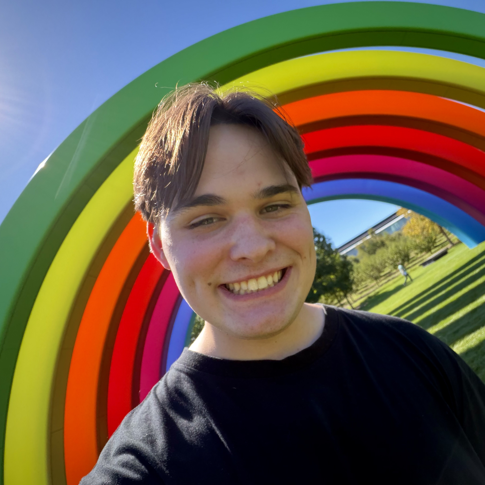
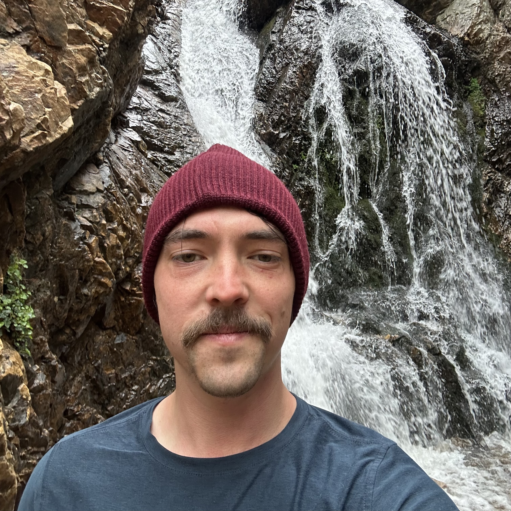
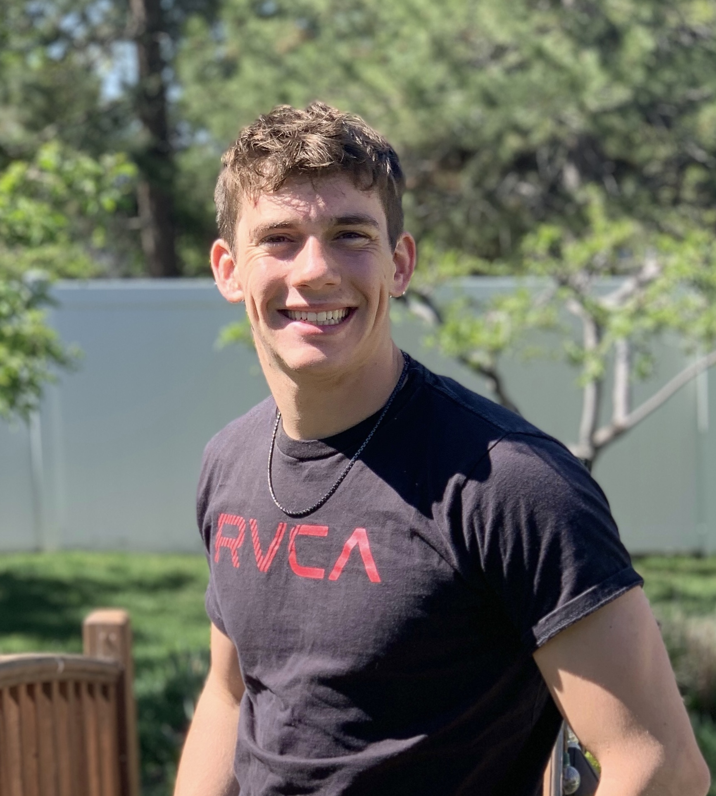

Meet the
team
Four University of Utah students building a mobile chess platform, covering real-time game networking and backend infrastructure to native UI and analysis tooling.

Landon West
Landon is a Computer Science student at the University of Utah with a strong focus on mobile development and consumer-facing product design. His technical background spans iOS, React Native, and backend systems, with a particular obsession for delivering polished, intuitive user experiences that feel native and refined. He currently works as a Software Engineer at Crumbl, where he continues to sharpen his skills building production-grade mobile software.
For the Overthrow Chess capstone project, Landon served as the iOS lead and frontend architect, owning the visual and interactive quality of the app end-to-end. He managed the project’s TestFlight distribution pipeline, coordinating builds and beta releases throughout development. His UI contributions include the Game Chat interface, Board & Piece Customization system, Stats Tab, and Leaderboards — each built with a careful eye toward interaction design and visual consistency. He also helped finish connecting the Push Notifications infrastructure, integrating App Store Connect to deliver real-time alerts that keep players in the loop. On the backend, Landon contributed to the stat builders that help players see where they’re progressing, as well as notification and challenge endpoints, bridging the gap between a seamless frontend experience and reliable server-side performance.
Landon is passionate about building apps that users genuinely love to interact with, and brings a product-minded perspective to every feature he ships. Outside of programming, he enjoys basketball, loves to kick back watching movies, and is getting married in October. He plans to keep building consumer apps that sit at the intersection of great engineering and great design.
Jacob Anderson
[PLACEHOLDER: 150–250 word bio for Jacob Anderson. Include degree program and expected graduation date at the University of Utah. Describe relevant coursework, technical interests, and any prior experience that connects to the Overthrow Chess project, for example, backend development, database design, networking, or algorithm work. Mention specific contributions to the capstone project such as features built, systems designed, or technical challenges solved. Optionally include personal interests, hobbies, or career goals that give reviewers a sense of who you are beyond the project. This placeholder must be replaced with a real bio of 150–250 words before final submission. The rubric requires bios in this word range for each team member.]


Solomon Duffin
Solomon is a Computer Science student at the University of Utah, graduating in Spring 2026 with a Bachelor’s degree. His technical interests include full-stack development, self-hosted infrastructure, and building tools that prioritize privacy and user control. He brings a systems-oriented mindset to software projects, with experience spanning React Native, backend services, and DevOps.
For the Overthrow Chess capstone project, Solomon contributed across the full stack of the application. On the frontend, he helped shape the app’s visual design and user-facing experience. He developed the puzzle feature, giving players a way to sharpen their tactical skills outside of live matches, and contributed to the board and piece customization system that lets users personalize their gameplay. On the backend, he worked on portions of the database layer supporting these features. Solomon also owned the project’s continuous integration pipeline, hosting and maintaining the team’s CI runner on his personal home server to keep builds and tests running reliably throughout development.
Solomon is passionate about building software that respects its users and solving hard infrastructure problems along the way. Outside of programming, he enjoys trail running, skiing, backpacking, gaming, and tinkering with his home server setup. After graduation, he will be joining the Sandbox Fellowship in Provo, a 12-month program where he’ll be building a tech startup while earning a Master’s degree in Computer Science and Innovation.
TJ Hess
TJ Hess is a Computer Science student at the University of Utah, graduating in Spring 2026 with a Bachelor’s degree. His academic background includes coursework in mobile application development and database management, which shaped his technical interests in database design, full-stack systems, and scalable application architecture.
For the Overthrow Chess capstone project, TJ played a central role in both the vision and implementation of the platform. As the project’s founder, he initiated the concept and assembled the development team. His technical contributions include implementing the Chess960 game mode, developing the over-the-board “play in person” feature, and designing the time travel system that allows users to navigate and analyze past game states during live matches. He also led development of the friends and challenge systems, working across the full stack from database schema design to user interface.
TJ is passionate about building interactive, user-focused applications and is excited to pursue a career in software development after graduation. Outside of programming, he enjoys playing chess, skiing, and recently Warhammer 40k. He plans to continue developing personal projects that challenge his skills and creativity.
